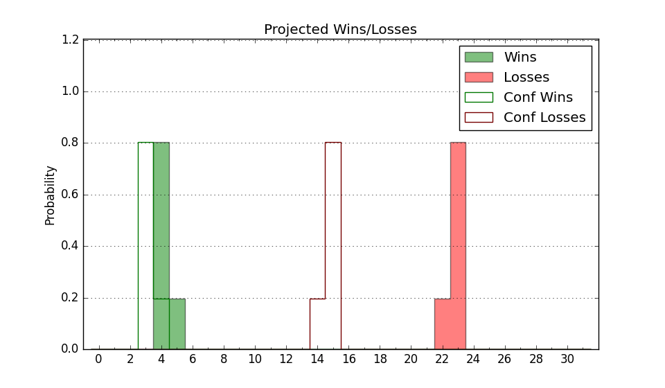

| Home | Game Probabilities | Conferences | Preseason Predictions | Odds Charts | NCAA Tournament |
| City: | Cape Girardeau, Missouri | |
| Conference: | Ohio Valley (10th)
| |
| Record: | 3-14 (Conf) 4-22 (Overall) | |
| Ratings: | Comp.: -23.4 (352nd) Net: -23.5 (352nd) Off: 89.5 (355th) Def: 113.0 (325th) SoR: 0.0 (142nd) |
| Remaining | ||||||
|---|---|---|---|---|---|---|
| Date | Opponent | Win Prob | Pred. | |||
| 3/2 | @ Southern Indiana (321) | 19.4% | L 65-75 | |||
| Previous | Game Score | |||||
| Date | Opponent | Win Prob | Result | Off | Def | Net |
| 11/6 | @Grand Canyon (63) | 1.3% | L 67-88 | 7.7 | 9.0 | 16.7 |
| 11/10 | @Butler (65) | 1.3% | L 56-91 | -9.2 | 8.8 | -0.4 |
| 11/15 | Evansville (200) | 20.6% | L 57-76 | -11.9 | 2.2 | -9.7 |
| 11/20 | Central Arkansas (343) | 56.8% | W 70-68 | -4.8 | 2.7 | -2.1 |
| 11/25 | (N) Evansville (200) | 12.3% | L 74-93 | 13.0 | -17.4 | -4.4 |
| 11/26 | @Chattanooga (139) | 3.8% | L 56-72 | -6.4 | 10.6 | 4.2 |
| 11/30 | @UMKC (227) | 8.5% | L 44-74 | -25.1 | 4.5 | -20.7 |
| 12/9 | @Fort Wayne (154) | 4.5% | L 80-89 | 19.1 | -6.1 | 13.1 |
| 12/21 | @Illinois St. (177) | 5.8% | L 64-85 | 6.9 | -10.8 | -3.9 |
| 12/29 | Southern Indiana (321) | 45.1% | W 93-91 | 9.4 | 0.1 | 9.5 |
| 12/31 | Morehead St. (121) | 9.6% | L 64-83 | -0.9 | -0.5 | -1.5 |
| 1/4 | @Western Illinois (257) | 9.9% | L 61-68 | 8.4 | 4.9 | 13.2 |
| 1/11 | Lindenwood (360) | 71.0% | L 68-74 | -8.0 | -13.8 | -21.8 |
| 1/13 | @Tennessee Tech (333) | 23.6% | L 59-70 | 5.1 | -14.3 | -9.1 |
| 1/20 | SIU Edwardsville (285) | 35.0% | W 52-47 | -13.8 | 32.7 | 18.9 |
| 1/25 | @Tennessee Martin (215) | 7.6% | L 58-84 | -12.0 | 7.9 | -4.1 |
| 1/27 | @Little Rock (221) | 8.1% | L 61-66 | -5.2 | 17.6 | 12.4 |
| 1/30 | @Lindenwood (360) | 41.8% | L 54-58 | -11.0 | 11.1 | 0.1 |
| 2/3 | Western Illinois (257) | 27.2% | L 55-76 | -6.4 | -19.5 | -25.9 |
| 2/8 | Tennessee Tech (333) | 51.3% | W 88-69 | 32.1 | -2.9 | 29.2 |
| 2/10 | Tennessee St. (292) | 35.8% | L 74-77 | 18.1 | -17.1 | 1.1 |
| 2/15 | @Eastern Illinois (306) | 16.8% | L 57-75 | -9.2 | -3.7 | -13.0 |
| 2/17 | @SIU Edwardsville (285) | 13.7% | L 76-80 | 13.6 | -2.6 | 10.9 |
| 2/22 | Little Rock (221) | 23.0% | L 61-83 | -5.9 | -13.8 | -19.8 |
| 2/24 | Tennessee Martin (215) | 22.0% | L 72-82 | -2.4 | 2.1 | -0.4 |
| 2/29 | @Morehead St. (121) | 3.0% | L 50-72 | -11.1 | 14.8 | 3.7 |
| Stats & Trends | |||||
|---|---|---|---|---|---|
| Current | Day | Week | Month | Season | |
| Composite | -23.4 | +0.2 | +0.1 | -1.4 | -11.2 |
| Comp Rank | 352 | -- | -- | -3 | -53 |
| Net Efficiency | -23.5 | +0.3 | +0.2 | -0.4 | -- |
| Net Rank | 352 | -- | -- | -1 | -- |
| Off Efficiency | 89.5 | -0.4 | -0.5 | +1.2 | -- |
| Off Rank | 355 | -1 | -- | +2 | -- |
| Def Efficiency | 113.0 | +0.7 | +0.7 | -1.6 | -- |
| Def Rank | 325 | +7 | +6 | -20 | -- |
| SoS Rank | 308 | +16 | +20 | -19 | -- |
| Exp. Wins | 4.2 | -0.0 | -0.2 | -1.6 | -8.0 |
| Exp. Conf Wins | 3.2 | -0.0 | -0.2 | -1.6 | -5.6 |
| Conf Champ Prob | 0.0 | -- | -- | -- | -8.2 |

| Advanced Stats | ||
|---|---|---|
| Stat | Value | Rank |
| Off Eff FG % | 0.442 | 347 |
| Off Ast Ratio | 0.124 | 294 |
| Off ORB% | 0.228 | 320 |
| Off TO Rate | 0.166 | 301 |
| Off FT Ratio | 0.252 | 349 |
| Def Eff FG % | 0.547 | 328 |
| Def Ast Ratio | 0.153 | 265 |
| Def ORB% | 0.305 | 283 |
| Def TO Rate | 0.143 | 214 |
| Def FT Ratio | 0.463 | 351 |